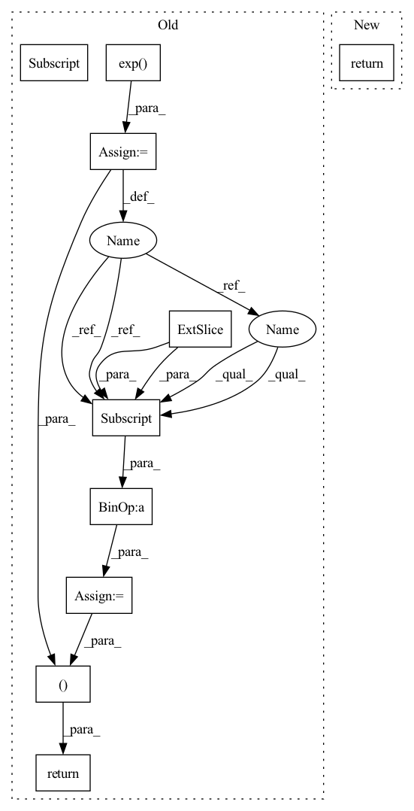

Pattern ID :533

Before Change
device = x.device
half_dim = self.dim // 2
emb = math.log(10000) / (half_dim - 1)
emb = torch.exp(torch.arange(half_dim, device=device) * -emb)
emb = x[:, None] * emb[None, :]
emb = torch.cat((emb.sin(), emb.cos()), dim=-1)
return emb
class Mish(nn.Module):
After Change
sinusoid_in = torch.ger(input.view(-1).float(), self.inv_freq)
pos_emb = torch.cat([sinusoid_in.sin(), sinusoid_in.cos()], dim=-1)
pos_emb = pos_emb.view(*shape, self.dim)
return pos_emb
class Swish(nn.Module):
In pattern: SUPERPATTERN
Frequency: 3
Non-data size: 10
Instances
Fragment ID: 1888637
Project Name: janspiry/image-super-resolution-via-iterative-refinement
Commit Name: 519d366759ea639a68262c20661fa8af7e85cfc6
Time: 2021-07-30
Author: jiangliangwei@tetras.com
File Name: model/unet.py
M Class Name: SinusoidalPosEmb
N Class Name: TimeEmbedding
M Method Name: forward(2)
N Method Name: forward(2)
M Parent Class: nn.Module
N Parent Class: nn.Module
M File Name: model/unet.py
N File Name: model/unet.py
M Start Line: 37
M End Line: 42
N Start Line: 32
N End Line: 36
'>
Before Change
def forward(self, x, action, with_variance=False):
mu, logstd = self.compute_stats(x, action)
dist = Normal(mu, logstd.exp())
pred = dist.rsample()
// residual prediction
next_x = x + pred[:, :-1]
next_reward = pred[:, -1].view(-1, 1)
if with_variance:
return next_x, next_reward, dist.variance.sum(dim=1, keepdims=True)
return next_x, next_reward
def compute_error(self, obs_t, act_t, rew_tp1, obs_tp1):
mu, logstd = self.compute_stats(obs_t, act_t)
After Change
def forward(
self, x: torch.Tensor, action: torch.Tensor
) -> Tuple[torch.Tensor, torch.Tensor]:
return self.predict_with_variance(x, action)[:2]
def predict_with_variance(
self, x: torch.Tensor, action: torch.Tensor
'>
Fragment ID: 1888638
Project Name: takuseno/d3rlpy
Commit Name: 9ccb6121c0baead0ffb85b64207c4fe6dc5fd5b5
Time: 2021-01-01
Author: takuma.seno@gmail.com
File Name: d3rlpy/models/torch/dynamics.py
M Class Name: ProbablisticDynamics
N Class Name: ProbablisticDynamics
M Method Name: forward(3)
N Method Name: forward(4)
M Parent Class: nn.Module
N Parent Class: nn.Module
M File Name: d3rlpy/models/torch/dynamics.py
N File Name: d3rlpy/models/torch/dynamics.py
M Start Line: 137
M End Line: 146
N Start Line: 94
N End Line: 96
'>
Before Change
device = x.device
half_dim = self.dim // 2
emb = math.log(10000) / (half_dim - 1)
emb = torch.exp(torch.arange(half_dim, device=device) * -emb)
emb = x[:, None] * emb[None, :]
emb = torch.cat((emb.sin(), emb.cos()), dim=-1)
return emb
class Mish(nn.Module):
After Change
sinusoid_in = torch.ger(input.view(-1).float(), self.inv_freq)
pos_emb = torch.cat([sinusoid_in.sin(), sinusoid_in.cos()], dim=-1)
pos_emb = pos_emb.view(*shape, self.dim)
return pos_emb
class Swish(nn.Module):
'>
Fragment ID: 1888639
Project Name: janspiry/image-super-resolution-via-iterative-refinement
Commit Name: a843610e321ec7e1898e97dd495f8991182b8b87
Time: 2021-07-30
Author: lw_jiang@foxmail.com
File Name: model/unet.py
M Class Name: SinusoidalPosEmb
N Class Name: TimeEmbedding
M Method Name: forward(2)
N Method Name: forward(2)
M Parent Class: nn.Module
N Parent Class: nn.Module
M File Name: model/unet.py
N File Name: model/unet.py
M Start Line: 37
M End Line: 42
N Start Line: 32
N End Line: 36